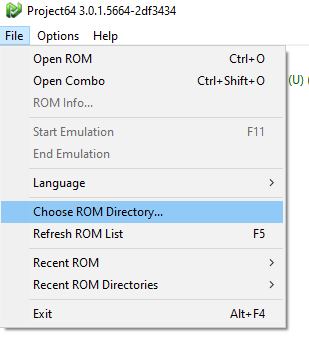
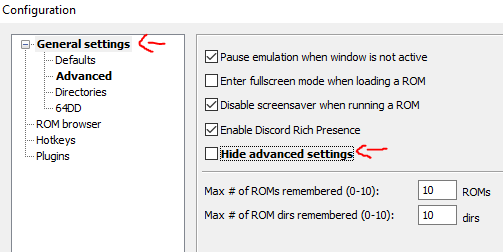
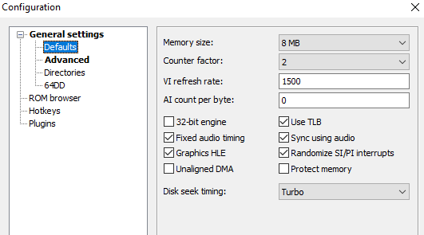
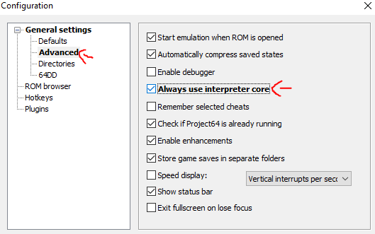
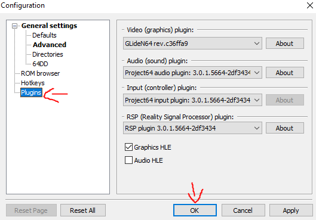
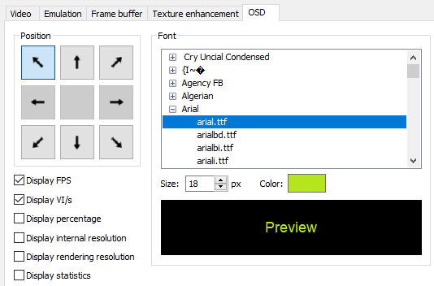

Emulator Set-Up
Here are a quick guide to set up different emulators to have the best modding experience.
Project64
The most-used Nintendo 64 emulator and, very probably, the one that will be used the most by the users of your mod. You can download it here: https://www.pj64-emu.com/
SETUP
- 1.- ROM directory
Go to File in the upper-left section of the emulator and select “Choose ROM Directory…”
It will open a new window where you can select an specific folder in the system. It will then use that path as the main ROM directory and it will show in the main page all the ROMS that are in that path.

- 2.- Configuration
Go to Options -> Configuration or press
Ctrl+Pto open the configuration window
- 1.- Enable Advanced settings
In the main settings section “General settings” un select the checkbox Hide advanced settings

- 2.- Defaults
Go to the Defaults section and set the Memory size to 8MB

- 3.- Advanced
Go to the Advanced section and enable Always use interpreter core
Note
This will avoid an error related to the way Project64 recompiles code when oppening your modded OOT ROM
- 4.- Plugins
Go to the Plugins section, copy the image configuration and click in OK

- 3.- Graphic Settings
Go to Options -> Graphic Settings and jump to the OSD section in the top of the window
Copy the configuration in the image and then click in Save and close at the bottom of the window

- 4.- Input Settings
Go to Options -> Input Settings and jump to the Player2 section in the top of the window
Click on Controller is plugged in to simulate a second controller
Note
In order to have access to the OOT debug features, a second controller must be plugged in. It was a security check back in the day
Mupen64
You can download it here: https://mupen64plus.org/
TODO
Ares
You can download it here: https://ares-emu.net/
TODO
Simple64
You can download it here: https://simple64.github.io/
TODO
BizHawk
You can download it here: https://github.com/TASEmulators/BizHawk
TODO